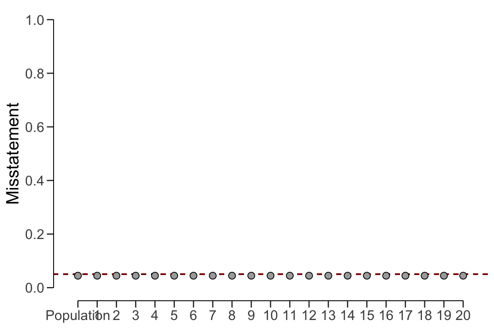

7.2 Complete pooling
Complete pooling (pooling = "complete") assumes no differences between strata.
This has the advantages that data from all strata can be aggregated, which
decreases the uncertainty in the population estimate compared to the no
pooling approach. However, the disadvantage of this approach is that it does
not facilitate the distinction between between strata, as every stratum
receives the same estimate equal to that of the population. The call below
evaluates the sample using a Bayesian stratified evaluation procedure, in
which the strata are assumed to be the same.
result_cp <- evaluation(
materiality = 0.05, method = "binomial", prior = TRUE,
n = retailer$samples, x = retailer$errors, N.units = retailer$items,
alternative = "two.sided", pooling = "complete"
)
summary(result_cp)
#
# Bayesian Audit Sample Evaluation Summary
#
# Options:
# Confidence level: 0.95
# Population size: 144000
# Materiality: 0.05
# Hypotheses: H₀: Θ = 0.05 vs. H₁: Θ ≠ 0.05
# Method: binomial
# Prior distribution: beta(α = 1, β = 1)
#
# Data:
# Sample size: 2575
# Number of errors: 115
# Sum of taints: 115
#
# Results:
# Posterior distribution: beta(α = 116, β = 2461)
# Most likely error: 0.04466
# 95 percent credible interval: [0.03735, 0.053345]
# Precision: 0.0086852
# BF₁₀: 0.022725
#
# Strata (20):
# N n x t mle lb ub precision bf10
# 1 5000 300 21 21 0.04466 0.03735 0.05335 0.00869 0.02273
# 2 5000 300 16 16 0.04466 0.03735 0.05335 0.00869 0.02273
# 3 5000 300 15 15 0.04466 0.03735 0.05335 0.00869 0.02273
# 4 5000 300 14 14 0.04466 0.03735 0.05335 0.00869 0.02273
# 5 5000 300 16 16 0.04466 0.03735 0.05335 0.00869 0.02273
# 6 5000 150 5 5 0.04466 0.03735 0.05335 0.00869 0.02273
# 7 5000 150 4 4 0.04466 0.03735 0.05335 0.00869 0.02273
# 8 5000 150 3 3 0.04466 0.03735 0.05335 0.00869 0.02273
# 9 5000 150 4 4 0.04466 0.03735 0.05335 0.00869 0.02273
# 10 5000 150 5 5 0.04466 0.03735 0.05335 0.00869 0.02273
# 11 10000 50 2 2 0.04466 0.03735 0.05335 0.00869 0.02273
# 12 10000 50 3 3 0.04466 0.03735 0.05335 0.00869 0.02273
# 13 10000 50 2 2 0.04466 0.03735 0.05335 0.00869 0.02273
# 14 10000 50 1 1 0.04466 0.03735 0.05335 0.00869 0.02273
# 15 10000 50 0 0 0.04466 0.03735 0.05335 0.00869 0.02273
# 16 10000 15 0 0 0.04466 0.03735 0.05335 0.00869 0.02273
# 17 10000 15 0 0 0.04466 0.03735 0.05335 0.00869 0.02273
# 18 10000 15 0 0 0.04466 0.03735 0.05335 0.00869 0.02273
# 19 10000 15 1 1 0.04466 0.03735 0.05335 0.00869 0.02273
# 20 4000 15 3 3 0.04466 0.03735 0.05335 0.00869 0.02273For example, the output of the summary() function shows that the estimate of
the misstatement in the population is 4.47%, with the 95% credible interval
ranging from 3.74% to 5.33%. Since the data is aggregated, the stratum estimates
contain relatively little uncertainty. However, the probability of misstatement
in stratum 20 (many misstatements) under this assumption is the same as that of
stratum 15 (few misstatements).
plot(result_cp, type = "estimates")
The prior and posterior distribution for the population misstatement can be
requested via the plot() function.
plot(result_cp, type = "posterior")